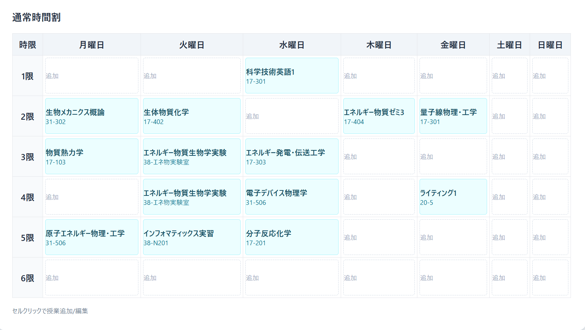
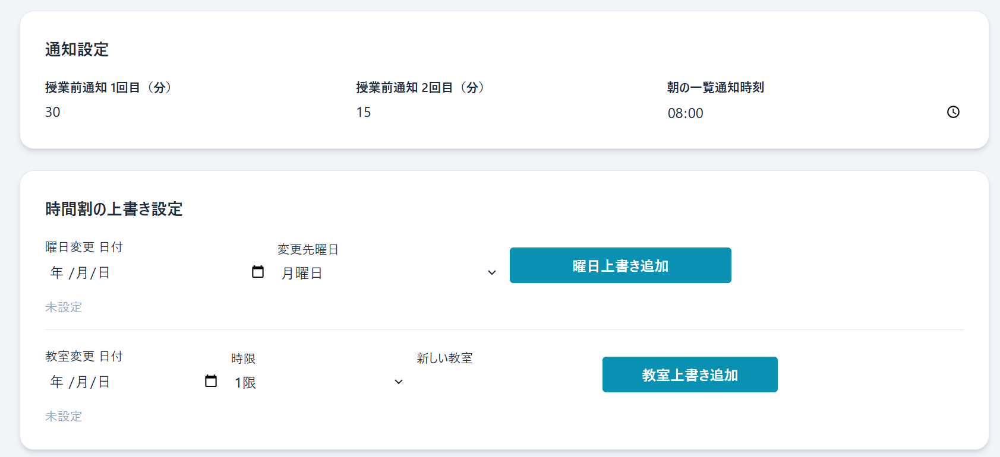
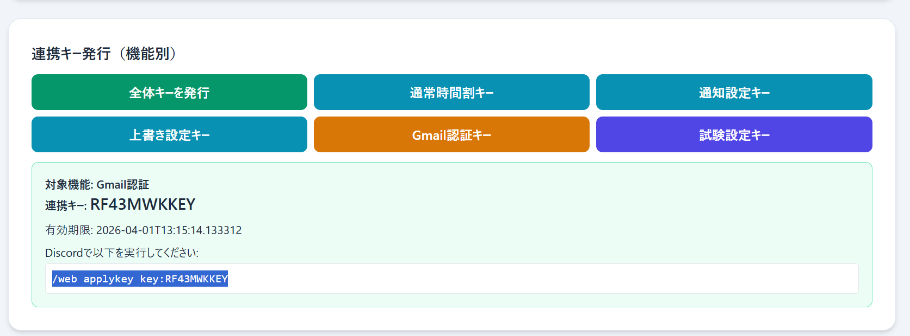

使い方ガイド
授業登録WebからDiscord反映まで、迷わず進めるための手順です。
最短3ステップ（まずはここだけ）
- 通常ページで授業を入力し、必要なら通知設定も入力する。
- 「全体キーを発行」を押してキーを取得する。
- Discordで /web applykey キー を実行して反映する。
準備: Discordサーバーに参加する
- このページのヘッダー（またはトップページ）の「Discordサーバーに参加」ボタンをクリックします。
- Discord のサーバー招待ページが開いて、サーバーへの参加が確認されます。
- 参加後、Bot → ダイレクトメッセージ欄からBotと会話できるようになります。
重要
Botはサーバー内でも DM でもコマンドが使えます。プライベートで作業したい場合は DM でコマンドを実行してください。
手順1: 通常時間割を登録する
- 通常ページを開きます。
- 上部の「前期 / 後期」を選びます。
- 時間割表のセルをクリックして、科目名と教室を入力します。
同じブラウザ内では下書きが保持されます。

手順2: 必要な設定を追加する
通知設定
通常ページの「通知設定」で、授業前通知の分数と朝通知時刻を設定します。
曜日・教室の上書き
祝日振替や教室変更がある日は、通常ページの上書き設定を追加します。
試験時間割
試験ページで試験期間の時間割を登録します。
Gmail休講連携（任意）
通常ページで認証URLを開き、取得した code を入力してGmail認証キーを発行できます。

手順3: キー発行とDiscord反映
- 通常ページまたは試験ページの「機能別キー発行」で必要なキーを発行します。
- DiscordのBotとのチャットで /web applykey キー を実行します。
- Botから「反映完了」の案内が届けば登録完了です。

ポイント
キーには有効期限があります。期限切れの場合はWeb側で再発行してください。
よくあるつまずき
- DMが届かない: DiscordのDM受信設定を確認し、再度コマンドを実行してください。
- 反映されない: 発行したキーが最新か、貼り付け時に空白が入っていないか確認してください。
- 試験設定が見えない: 前期/後期の切り替え先が合っているか確認してください。